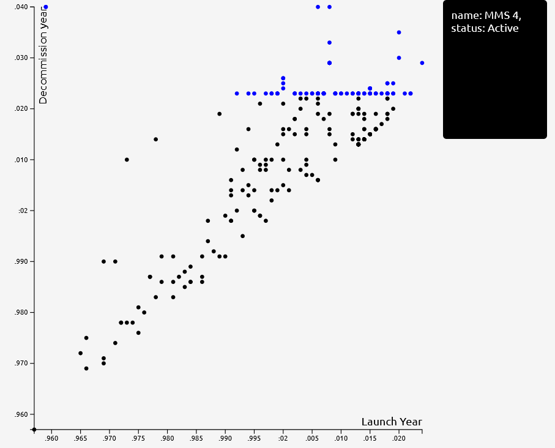
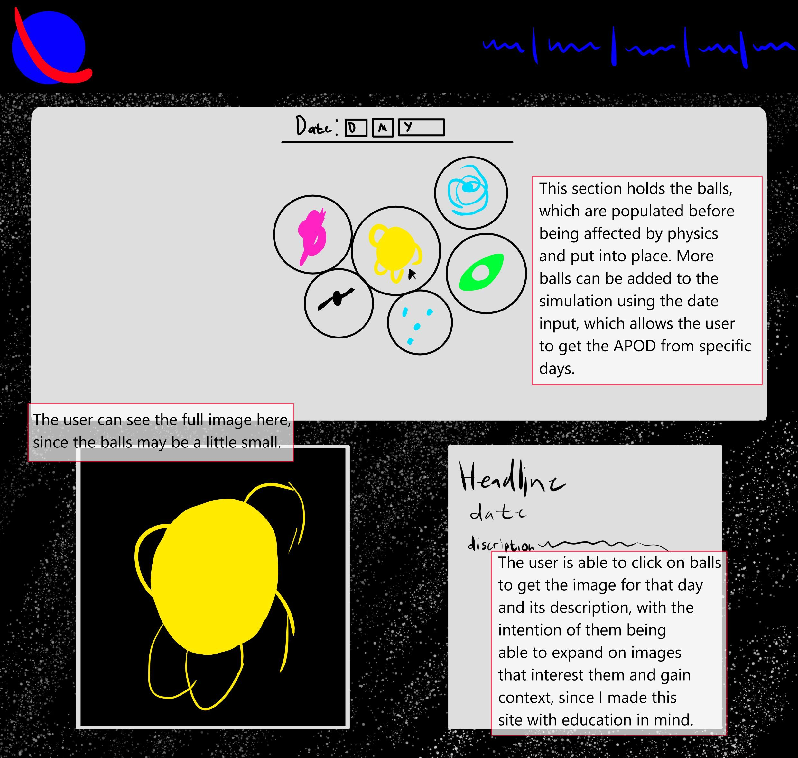

Welcome to the design page
This is where I will be discussing the design and philosophy of this website in depth.
Initial design and goals
Unlike my previous site, where I was largely operating blind the whole time, I now have a fair bit more experience making websites. With that in mind, here are some of my main goals for this project:
- Start stronger: I had touched HTML briefly once in my life before this year. Now I have a semesters worth of experience to work from. So that means keeping up the same standard, and improving on it as I master new skills.
- Don't waste time repeating things: I have a whole library of experiences and functions to work from going into this project, which I plan on putting to good use to save me time and allow me to put the bulk of my focus on learning D3 and dealing with the NASA API.
- Do better planning: as mentioned, I didn't exactly know what I was doing last semester, and now I do. So that means I can go in with a far more comprehensive idea about what I am actually doing with myself this semester.
- Learn a lot: API's are the backbone of a great deal of web development, and this course serves as an excellent way to learn them so that I can utilize them in both future personal and professional projects.
- Keep better practices: My old code is kind of a mess, which is more due to my own laziness than anything. I plan on annotating this code better and commiting to certain practices like only using Var for the sake of keeping my code cleaner and making it easier to go back to, instead of having to relearn it every time I take a week off to focus on another project.
- Use the proper semantic elements: I only really learned what Semantic elements where about 2/3s of the way into the last website, but now I don't have that issue so I can start off with the correct practices regarding them.
- Have fun with space: Space is really cool, and I do my best work when I'm passionate about the topic. So, I'm going to be sure to embrace the inherent fun of this assignment both thematically for my site and for myself, with the goal of using that passion to output the best possible final product. Because, come on. We're working with NASA. That's cool no matter how you look at it.
Style Guide:
Core principles:
My main guiding statement for this project as I go forwards is this:
Capture the wonder of space.
This immediately gives me a solid starting point for my design, since there are a great many websites that focus on space out there already, and because of that I'm able to draw upon them for reference when building my own site. The most obvious starting point amidst these is the National Aeronautics and Space Administration's own website.

NASA has a good website, although I need to acknowledge that its focus is very different to mine. The big difference is that NASA has an extremely broad set of focuses, from sattelites to Space Shuttles to the environment, while my site is purely going to be concerned with the movements of sattelites. This narrows my scope somewhat, so I will narrow my scope and adjust my parameters accordingly.
So, that gives me a goal: Create a site that is easily readable, but still satisfies that awe that space and its wonders is known to inspire.
The first step towards doing this, for me, was deciding on core design elements. My font, my color scheme, the basic layout and the readability of my information.
- For my font, I went with a style called Ubuntu. It's a strong Sans Serif font that is close to the font NASA uses on their site. Truth be told, I'm considering switching it for the exact font Nasa uses, but that's only a thought right now since I'm still happy with this font.
- I believe a strong color scheme is key to the design of a website, especially one that is consistently used. It allows the viewer to quickly and easily categorize information, reducing processing time and increasing understanding. It's almost like doing the mental heavy lifting for the user. Because of that, I plan on using two main colors to highlight information. Blue backgrounds are to be used when important information is being presented on its own, while red will be used to highlight important information which is part of a larger section. I chose this color scheme because it matches NASA's, adding more to the theme and aesthetic of the site. This is with the understanding that the usage of Red could exclude colorblind users.
- My site is going to use a largely homogenized layout, both to maintain consistency and ease of use, as well as reducing dev load due to the relatively small scope of this site. Having the basic ideas down so soon is still a major win for this site though, since it means that far less time is spent agonizing over site decisions.
- A big focus with this project is providing interesting information in a readable manner, and there is perhaps no bigger tool for this than the reading "Storytelling with Data" by Cole Knaflic. The book provides a useful outline about how one can go about presenting data in a way that is readable and interesting. It's extremely useful to have that kind of information available as a resource, since while I do feel as though I'm observant enough to somewhat understand how other sites present their information, seeing an actual guide to the concepts involved with storytelling using data in an easily readable format is a massively useful tool to have.
So... What am I doing for my art piece?
My initial plan for my art piece was to make a small program that painted the sky with pretty colors and call it a day there, but now I'm not so sure. The goal of this website is slowly crystalizing into something more firm, and part of that is definitely that I want to take an awareness approach to my art piece. As the home page says, there are nearly 6000 sattelites in the sky, and only around half of those work (Wood, 2020). Space junk is high on the list of future problems for mankind, and so I'd like to raise a bit of awareness about it with the hopes of causing at least one interesting conversation.
So my idea for right now is to build a 3d scene where the user can look at the stars but they're blocked by satellites, which will cast these large red dots. Maybe there'll also be an option to turn the sattelites off as well, we'll see. I might also use this model for something, but so far it's all just ideas and figuring out how I can best use the API to create something meaningful.
What I can say for sure is that my original idea is scrapped. It simply lacks the level of thought provocation that I want out of this project, and I try not to be someone who's so sacred about their ideas they self sabotage.
Design: Submission 2
The Wild goose chase.
Before I discuss the design elements of the updated site, I want to discuss and reflect a crazy wild goose chase I went on because I feel it needs to be documented and we don't have blogs anymore.
So, going into this assignment, I knew from early on that I wanted to do something relating to sattelites. The SSC API called to me, and so I followed my heart and decided to use it. However, the problem there was that the SSC API is one of the less used ones, purpose built for a very niche range of applications. So it took me a lot of research to try get it working, research which brought me to...

SPACETRACK!
Spacetrack had all the tools I could ever want to build both my visualizations and my art piece. It was perfect, just perfect, down to every minute detail. So, I asked and recieved permission to use it, and set about trying to get it working as part of my site. That's where the real trouble got started.
Every time I tried to call the API I got an error back saying that I had the wrong CORS type. And I spent a long time trying to solve this error, doing everything in my power, until I eventually ran out of documentation online and resorted to emailing the people who run the site. I wish I had have done that earlier, because I got a short, polite email back explaining their API can't be called using Javascript, so I should come up with another solution. Which I might still, but likely won't since server hosting in the ways needed to bypass this issue is a little out of the range of my current assignment. Even if it would be cool to host this site on my own server.
So the real question is: what did I learn? Fortunately, it was a lot. I went into this ordeal understanding nothing about APIs, and have left it with a more solid understanding about how APIS and javascript work. I also learnt that not everything is the users fault, even if most things are. The reason why I spent so much time on this distraction was because I assumed that I was somehow the problem because I was a dumb baby who didn't understand API calls. And while that may mostly be true, I have also been reminded once again why when you assume you make an ass out of u and me.
So that's my story. Of course I'm not putting this here for sympathy or anything, but rather because I think I've learnt some valuable lessons from this experience and it'd be a waste not to use them.
Style Guide (updated):
My design for this website is still heavily inspired and driven by NASA's own.
I'm using a clean and minimalist approach, accentuated by an animated background. The goal is to capture the feel of space, specifically through the lens of the National Aeronautics and Space Administration and the very well established design language that they have built over their many, many years of operation.
Color:

The core palette of my site is red, blue and a shade of white called whitesmoke. The red and blue are taken directly from NASA's own pallete, while whitesmoke is the shade of white I like to use personally. This personal preference is based on the fact that whitesmoke is a slightly off shade of white, reducing brightness compared to plain white while retaining the contrast benefits, resulting in what I believe to be a pleasent viewing experience.
This color palette does have some drawbacks. Mainly it is not very color blind friendly, especially the red. This is an unavoidable fact of my chosen aesthetic, one which I constantly have to work around. The first way I do this is by setting most of my site on boxes of text, instead of leaving it floating against the stars in the background, since if I didn't have those boxes this site would be near unreadable, especially with the background. I also use my red sparingly, since blue constrasts better a lot of the time and red green colorblind is the main issue I'm dealing with anyways. After all, 7-10% of men are red green colorblind (‘Color Blindness Facts & Statistics: Prevalence’, no date)
My color palette is also used to create an information hierarchy in my site. Sections of black text on the white background are body text. Sections with blue and white are medium priority, while red text is used to highlight sections of importance within other sections of text. Finally, red on a blue background is used to denote the highest priority. By doing my site this way, it should hopefully be a bit easier to navigate thanks to users being able to immediately identify heirarchy by looking at the site.
Layout

My layout for my site still follows a pretty standard linear flow, with users reading from top to bottom. Because while experimentation is the fuel for learning, my top priority is and has always been responsiveness, because it is very useful to be able to show people my site on mobile or other devices when I want to get feedback on it. So, I stick to a relatively basic layout because it means that the built in functions for responsiveness offered by HTML stay functional. It also makes the site easy to read, since users can just read from top to bottom, and saves time that is much better used elsewhere.
Something new I'm trying to do with this layout compared to my last site is adding more multimedia, since it undeniably makes for a richer experience. I'm basically just trying to slip whatever I can in wherever I can, to illustrate my point and to make things look nice.
Font
Ubuntu.
I am using a font called Ubuntu, which is a solid sans serif font with a smoother feel. I chose it for two reasons: Firstly, it is very legible, at least to me. I would love to hear the feedback of someone who struggles with reading on this. Two, with its bold lines and curved corners, it has a somewhat scifi feel to it. This is good, since it connects well with the space theme that I am going for.
Navigation tools
I am trying to include a variety of navigation tools where possible, since ease of use in this site should be top priority. Especially in a site so simple. Currently, my navigation mainly consists of the top bar, along with some other links in the site, a link bar that allows quick navigation of the blog page, and a button that allows the user to return to the top of the page. I've also added a footer, which should make it easier to tell when you reach the bottom of the site since that was an issue previously.
Using D3
D3 has been -to put it bluntly- a pain to use. Not because of the functionality of D3 itself mind you, but rather because of how many overlapping functions it has. Because of this, a solution that works for one person simply won't work for another, and it creates a great deal of complication for me as I have to try stitch together solutions. It's also very finicky, with some small changes completely breaking functions that were otherwise working perfectly. All of this is compounded by the fact my data is being processed inside the code first, as opposed to being fed straight into D3, so that I can get the information I want to display out the raw data. None of this has entirely been unsolvable so far, but my second graph has come pretty close, since it is currently broken with no way of fixing it that I can see.
Graph planning.
The main focus of the past two iterations of this site has been the graphs. This section will discuss those graphs in depth
Interactive Graph:
My interactive graph shows the date a satellite becomes active and the date it will go offline, or otherwise stop being tracked, in scatter plot format. The interactivity comes from being able to hover your mouse over an element on the graph, which shows you the name of the satellite you're looking at and the current status, be that active or inactive. The purpose of this is to allow the user to become more familiar with the dataset, which should help better contextualize the other visualizations that I present. I chose to go with blue and black for the two colors since they are both easily visable, and the active satellites being blue should hopefully make them more obviously active.
Static Graphs:
My first graph is simply to show the increasing volume of satellite launches to provide context for the conversation that is being had in this website. I use a simple line graph, which operates on five year intervals, to display the information in an easily readable manner. This graph shows my choice of color scheme, with the blue. I had the choice of either going with a red or blue color scheme for my graph, and I decided go with the blue since its far more easily readable, even if red may have created slightly more of a sense of urgency (Knaflic, 2015).
For my second graph, I went with a simple but effective graph that shows with two lines the number of active satellites (in blue) and inactive ones (in red). I chose these colors because blue and red contrast well with each other in this context, and it also fits into the color scheme of my website. The goal of this graph is to demonstrate my main point: that the number of inactive satellites is overtaking the number of active ones rapidly, and I think this chart show that quite well. Something that makes this graph different is the heavier stroke of the line, which is supposed to make picking up both lines easier, especially in your line of site.
For my third graph, I went with bar graph so I could display clearly the relative amounts of satellites that were active for the specified time period. This graph proved particularly difficult to get the scales working, but in the end I solved it. One issue I still have is that one of the labels is hard to read, but that seems easy to solve.
Besides that, the only real other bit of front end work I did during this section was editing some of my text to make more sense and feel less place holder, and I made it so that all the links on my site are actually links for more logical navigation.
Learning from past mistakes
Interactive Media has probably been the most chaotic subject I've taken since high school chemistry, when my teacher forgot to teach us half the syllabus. Not through any fault of the pedagogues involved, but rather due to my newfound ability to make weird and spectacular mistakes with every submission.
But enough complaining, this isn't about that. I want to talk about the process of learning from mistakes. Because that is where I learn the most, where most people learn the most. First of all, the learning experience that made me want to talk here: pushing my changes to the branch that's still being marked. Because I usually step back from my site until the marking process is done, I haven't had problems with breaking the live site before. Now I have, and I've realized that better practice would be to run the site of the most up to date version of the submission branches that I make until such time as I need to start testing the main branch on the live site again.
I also learnt a bit more about proper practice with laying out my site and navigating it. Due to my lack of control over the exact way that the site is laid out because of using Githubs pages, I ran into several major problems with the way my site was laid out and navigated. I've ultimately fixed those now though, and I'm glad I took the time to make a proper implementation of site navigation because it should serve me far better in the long run than doing a hack job every time. Which is true in most situations, but weirdly still a lesson I had to learn again.
Another long overdue fix I implemented was moving from D3 V3 to V6. I was hesitant to do so, due to the fact that most of the information on the internet is based upon the far more prolific D3 V3, but I was motivated by the increased functionality so I could get my interactive data visualization working. It turned out to be quite an easy transition, except weirdly it broke my axes and made them invisible? I'm not sure why that of all things changed, but regardless I fixed it and even learned how to change axis color if I ever need to in the future.
Design: Submission 4
Has anything changed since last time?
There's been the regular behind the scenes changes, and I reworked my home page a little to include links to the now complete art and learning pages for the sake of improving site flow and directing users towards the parts of the site I want them to see (as seen in this new wireframe), but other than that it's just mainly been a lot of work on the data art project.
The Data Art Project:
D3 has proved to be the most difficult tool to work with I think in the whole of my university career, owing mainly to the difficulty of finding information about it online. You may say it's just a google search away, but the problem is that A: turns up solutions to other people's problems, not your own specific implementation, and B: is often outdated information, meaning that if you are using D3 V7 as recommended, finding relevant information becomes far harder.
But that's enough of a rant, what about actually designing the data art piece? Well this has already been about at length in blog post 4, but I'll summarize the key points here: Basically, it's a case of vision butting up against reality. I had a grand vision for what I wanted, but as I came to understand my tools better (even if not fully) I realized that what I wanted simply wasn't possible, and had to pivot to something new.
That being said, I am quite happy with what resulted from the process. I have a fun, interactive data art piece that includes all the features I said it would (against all odds) and is endlessly interesting thanks to the sheer quality of the pictures NASA chooses for its APOD.
In other words, I do think things have worked out well, and I'm glad that I was able to turn out something solid even if I did have to struggle a lot to get to that point.
Design: Final Submission
This will be split into two sections: changes to the site and the final data art piece.
Final data art piece.
The initial wireframe of what ended up being my final data art piece.
The wireframe of my scrapped idea for the final art piece.
Initially, reading that we had to make another data art piece sent me into a flat panic. I mean, I'd already exhausted my creativity and skill making the first, and was stretching into other APIs from NASA to do so. It also took a long, long time to get working properly, with a great deal of sweat, a bit of blood and more tears than I'd like to admit (although that could be just about any part of this site). Still, when the initial shock faded, I was able to pull myself together because I had a job to do. And naturally I was going to do it.
What would come to be the final version of art 2 was my initial idea for the project, but as the wireframe shows, it was pretty boring and I didn't know how to make it pop. So I briefly flirted with another idea, one involving an animated sorting algorithm like the immensely satisfying ones you see sometimes on YouTube, but that fell through because I soon realized that I lacked the skill with both sorting algorithms and animation. Not for lack of trying of course, but I've had too many experiences in this course where I've suffered because of over commitment to one idea. So, I decided to ditch the plan and go back to the original, which I already had a prototype for, so I could submit something I didn't like instead of nothing at all.
However, my time with the sorting animation was not wasted. I learnt about animation, and also got a clearer idea about what I wanted to do with my art. The other thing that contributed to my direction was the final blog post, which gave me the philosophy for my second piece: "Data art is both the data and the art." With this new philosophy, I set out to make something that both represents data in an interesting way and makes it look pretty.
So, how did I make my final piece? The biggest change between this and my previous attempts is that I am once again using another of NASA's API's, this time the Near Earth Object service. On a technical side, I First used D3's contour function to add some base visual flair. Then, I added animations (which look really good in my opinion) to add both interactivity and visual flair to the project. I also furthered the interactivity by creating an additional information tooltip, so that the data won't just exist uncontextualized. Finally, I added a little bit of colour to the whole thing, in the form of the colour banded contour lines, to create the prettiest data art piece I could.
Overall, I do think that it is less impressive than my first piece. I mean I could literally play with that thing for hours, so it's hard to top. But I am more proud of this second piece in a way. The first is heavily bastardized off Andre's work, and I barely got it to work. Even then, I hardly understand it. This second piece was far easier to put together, and was done mainly by my hands. Most of all, I know what all the parts do, unlike basically any of my previous D3 projects. In that way, this is the perfect ending to this semester, since it represents a transition from hapless D3 baby to something more like a D3 toddler, which I think is far more than I ever expected of myself.
To end off with, I want to reflect a bit on the NASA API. Because while using anything NASA related is hype, I'm not sure it's the right API to be mandated for this course. For one, while it is largely reliable and easy to use, some of the services it offers are more reliable than others, and the SSC API that I practically based my site off had several outages throughout my time using it. Next, I do not feel like the data sets it offers are particularly good for use with D3. They're often too small, focusing on depth over bredth which results in less visually interesting outcomes. A lot of that data also isn't immediately useful, and has resulted in about a third of my time making visuallizations being spent just getting the data usable. Now I know that's more realistic to a proper work environment, but it doesn't change the fact that the data these API's offer just isn't all that useful for visualizations. Of course, this doesn't really matter to me anymore, since I'm done working with this API for the time being, but I guess I just want it to be something that's thought about in future.
Changes to the final submission.
To start off with, I want to briefly comment on the fact that I've kind of gotten better at wireframes. I know, we all never thought it would happen. Initially, I used to completely phone them in past a certain point because I would just clearly visualize my idea in my head and transfer it directly to the site. Over time, I've come to realize that while this works for me, that middle step of planning out I want does still help, especially when working with D3. Because while I work on the wireframe, I can start mentally sorting out what functions I plan on using to bring the art to life, which makes the process of actually putting the whole thing together easier. Also, it helps with communicating my ideas, like all design tools, which shows what my intent is behind the choices I make.
So my wireframes have naturally improved, because initially there wasn't really all that much intent behind the web design I did. I'd just work off vibes and what I felt looked right, hence the early internet looking sites I made. But as time has passed, I've become more deliberate with my choices on the site. Giving everything a smoothed, sci-fi and professional feel by deliberately choosing font, palette and rounded shapes for my site. As the site has become more deliberate, I've had more to talk about in my wireframes, so it's been a natural evolution.
Thanks to my increased understanding of D3, I've been able to implement responsive sizing to the graphs. it's not perfect, but it's better than just leaving them at whatever size. The final art piece, in particular, actually looks better on a smaller screen in my opinion. Mobile functionality has always been part of my goal for this site, because being able to show the site on my phone makes getting feedback easier. It also motivates me more, since I'm no longer just doing this for marks but will instead have something real to show to my friends and family. Any additional motivation always helps, especially because I'm shooting for a higher bar than just mediocrity.
I've also continued working on making this site more pleasent to read, which is something I definitely haven't been concious enough about throughout the project. I think it's taken a bit of a backseat to D3 and the more code heavy stuff. Still, waiting till the end to do it has turned out to be perfect, because I've done so much work these past few days my eyes are beginning to really hurt. So I'll do anything to make the site better to read right now. Anyways, improving readability involves a few things. Making fonts more reasonable, changing indentation (this was a big one), improving heirarchy of how elements are laid out and generally just fixing a lot of the little inconsistencies that have built up over multiple iterations of this site. This is after all more or less the 0.5 version, so I'd say that I've built up a few old holdovers from previous site versions by now. So, fixing those, and making this site better to read.
I also tried my best to implement feedback about my first art piece, adding a description and shifting things to be a bit better spaced on a page. Also weirdly I never implemented a function to make the selected node on the fourth graph grow in size, so I'm doing that here and now.
The one thing that isn't being changed is my rare usage of spans/divs. Look, I know we're supposed to avoid them, but I believe I'm using them in their correct places. They're being used where I need non semantic, non-existant little nebulous blobs. If there was another way of doing it, I would have done it. Probably, unless the method is too obscure. That said, I do enjoy hunting down misused divs in my code. Finding the correct semantic elements for everything I can has made me appreciate how diverse HTML is, and diving through MDN has given me more than a few ideas for new features that I can put on my site. It's just those specific use cases need Divs, is all.
The final change I made to my overall site was adding a little bit of microformatting. I'm sure it's not a perfect implementation, but I don't really understand the minutia of microformatting usage well enough to do a great job. I'm just sprinkling some in there to hopefully improve my site's UX and if it helps it helps. If it feels a little phoned in, that's because I'm trying not to melt my brain while I still have a few more big fish to fry.
Final Reflection
You know it's funny, I've picked up these weird habits of having something that I do to signify a project is done in every subject. My little ribbon on things. In FVPA, it's organizing the reference list. In GD, it's giving the game a logo. In IM, it's writing an unnecessary reflection.
This subject has been, without any doubt or competition, the hardest thing I've done in University. Which is funny, because I thought it would be easy. Between learning 3 new coding languages and the trial by fire that has been our second course, I don't think this subject is easy. But I've also made it a lot harder for myself. I've done the wrong submission type, broken my site, spent hours on fruitless rabbit holes and even hallucinated a submission. I've been a whole mess this year, but I think I'm all the better for it.
Because it's felt like my instinct every step of this way has been to give up, but then I remember the Kamina who believes in me, and I keep pushing. I picked myself back up from each and every frustrating, embarassing failure and kept going, twice as hard as before.
Do I think that's resulted in a perfect site? Hell no, if just having grit was enough to pass I feel like I should have an exemption by now. But I got something in, every time, no matter how bad it got and how much I wanted to break down and stop. Really, it feels like I've learnt more about motivation from this course than coding -I've learnt a lot about coding- and I couldn't be happier.
So, that's been my 2023 as a student in Interactive Media. A shitshow, but one that has woken me up to the real world after two years of Covid made university feel like just another two years of high school. After this I feel better, stronger, and more ready than ever before to tackle the real world. Or real work at any rate, I'm not quite ready for taxes yet.
Yeah, I broke out the cheesy Gurren Lagann gif. This is my reflection and I can express my emotions however I want.
So to the teachers who helped a lot with the work but not really the personal stuff but that's fine though because I was dealing with it on my own not to say they didn't help a lot because they absolutely did, thank you very much. Have a great holiday, and I wish you a class that doesn't use chatGPT for every assignment next year. To the people reading this other than them: no you're not, nobody is getting this deep into this site. To everyone else, engrave it on the earth.
Love yourself, peace in the middle east, this holiday couldn't have come soon enough and GOOD NIGHT TRISTATE AREA!